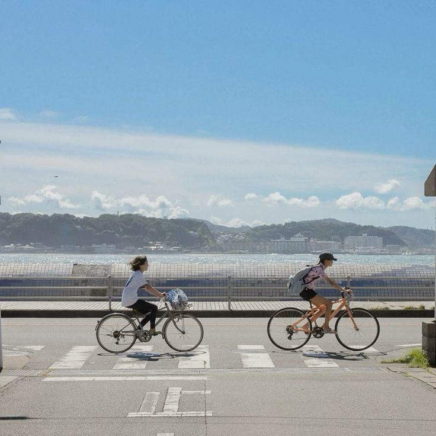

|
|
|
|
Home |
|
Profile |
|
Gallery |
|
Article |
|
Guestbook |
|
| ꕤ Little Things Matter ꕤ |
|
 |
୨୧ ──── Bersepeda, Hobi yang Menyenangkan dan Menyehatkan |
|
Bersepeda merupakan salah satu hobi yang saya sukai.
Bagi saya, bersepeda adalah kegiatan yang menyenangkan karena dapat dilakukan sambil menikmati suasana di sekitar.
Selain itu, bersepeda juga menjadi salah satu cara untuk mengisi waktu luang dengan kegiatan yang positif.
Bersepeda memiliki banyak manfaat bagi kesehatan tubuh. Dengan bersepeda, tubuh menjadi lebih aktif dan bugar. Kegiatan ini juga dapat membantu mengurangi rasa penat setelah melakukan berbagai aktivitas, seperti belajar di sekolah. Baca selengkapnya |
|
୨୧ ──── Musik, Teman Setia di Setiap Suasana |

|
|
Musik merupakan salah satu bagian dari kehidupan sehari-hari yang sering saya nikmati.
Mendengarkan musik menjadi kegiatan yang menyenangkan, terutama ketika sedang bersantai atau memiliki waktu luang.
Berbagai jenis musik memiliki ciri khas dan suasana tersendiri yang dapat dinikmati sesuai dengan suasana hati.
Musik juga memiliki banyak manfaat bagi kehidupan. Mendengarkan musik dapat membantu mengurangi rasa bosan, membuat pikiran lebih rileks, serta meningkatkan semangat dalam melakukan aktivitas. Selain itu, musik juga dapat menjadi hiburan ketika sedang merasa lelah setelah menjalani kegiatan sehari-hari. Baca slengkapnya |

|
୨୧ ──── Dunia Programmer yang Mau Aku Jelajahi |
|
Teknologi merupakan salah satu bidang yang sangat menarik bagi saya.
Dari berbagai hal di dunia teknologi, saya memiliki minat untuk belajar menjadi seorang programmer.
Menurut saya, programmer adalah pekerjaan yang keren karena dapat membuat berbagai program dan website menggunakan kode.
Saya mulai tertarik dengan dunia pemrograman karena ingin mengetahui bagaimana sebuah website atau aplikasi dapat dibuat. Meskipun belajar coding terkadang terasa sulit dan membuat pusing, saya merasa senang ketika berhasil membuat sebuah program atau website. Baca selengkapnya |
| Kembali ke atas |